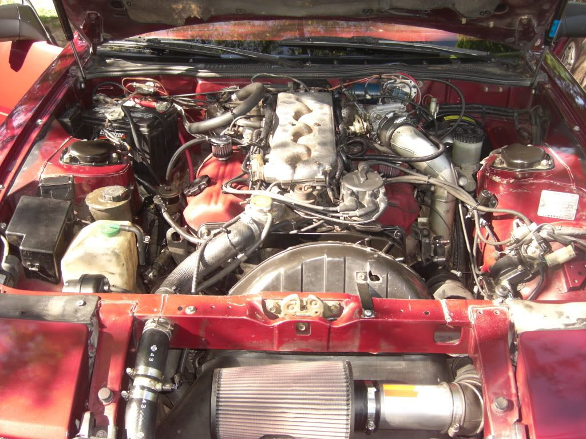

-
when going down the highway i seem to get excessive amounts of hot air coming out of the defroster, so it gets hotter than hell in the car, the defroster can be turned on and off but can't seem to close the vent. Is there a vacuum line somewhere in the engine bay that needs to be hooked up?Mike_GruiZinga
DISCLAIMER:
These are sold as is, with no warranty expressed or implied. They are not intended for use ever. I do not condone using them for anything but paperweights. Your safest bet would be to set them on a shelf in your garage, and bench race with your buddies about how awesome your 20 year old sports car will be some day.
-
i have the same problem is defiantly a vacume hose. it gets worse trust me it gets to a point when you have the ac on or heat on and it will all of the sudden close all the vents. You will be able to hear the air moving but no air comes out. I always have to turn it off and on again to get the vents open but then a little later it will do the same thing again. So if you figure out where the leak is let me know also lol. Mine started the same as yours did.86 NA
87 Turbo
Member of the "zetto sun-ichi" group
Local MN car forum/club anyone welcome..... fivezeroseven.net join! -
Happens in mine too, thought it was just the water cock beside the battery, it works fine, vacuum lines are good; but I always tend to get some nice hot air while driving at highway speeds, may have to look up under the dash some day to see if something isn't actuating correctly. For now, I will drive with the windows down and the roof out when it's hot.
Edit; lol @ the *beep*, reference to a rooster.


-
Your HVAC controls are vacuum operated. On the highway, the engine has a fairly large load on it, so you have less vacuum force available then when at idle, and any kind of hill or acceleration will drop that to next to zero.
Therefore, it takes only a small leak in the vacuum lines to overcome the small amount of vacuum available at highway speeds. When you run out of vacuum forces, the HVAC system goes to it's default position: Full heat, defroster. Fuckin' sucks in the summer.
What to do:
Find the vacuum canister up by the headlight. Inspect/replace the source line that runs to it from the plenum. Then inspect/replace the line running to the watercock. And most importantly inspect the long vacuum line that runs from this canister up through the firewall into a T-fitting just over the passenger's feet. This line is crucial. It's not a bad idea to put a vacuum check valve in the line right before this T-fitting above the passenger's feet. That's what I finally had to do to mine to get it to hold. Otherwise it'd open all the vents when in boost. And hopefully the check valve will last longer there than they do exposed to engine heat.
I by-passed my heater core for this summer. I'll have to make sure I hook it back up this month now that I finally have the vents working in a non-retarded manner.My beloved Z:1987 2+2 NA2T w/30a swap.
My black sheep: 88ss parts car (pretty much stripped and gone)
207k miles and counting. Turbo'd since 155k. -
Haha, thanks for the info, I'll look into it when I get some time. I was thinking of bypassing my heater core soon, because a lot of the hoses under the hood keep developing leaks, and it was hard (at the time) to find those replacement S bend hoses, so I ghetto rigged it for now with some heater hose. The car is strictly a summer car, however I may need the defrost when it rains, as the windows fog up
-
Yeah i too had troubles finding the octopus-hose that goes on the watercock so i put a big dumb loop of hose on there. Glad i did because that left me enough room, two years later, to just run that big loop on over to the back of the engine and by-pass the core.My beloved Z:1987 2+2 NA2T w/30a swap.
My black sheep: 88ss parts car (pretty much stripped and gone)
207k miles and counting. Turbo'd since 155k. -
You can clearly see my ghetto rig hose at the back of the motor, it does the trick for now, but it looks like hell haha
Please don't mind the messy engine bay, it's in progress :deg
 -
Not only does your ghetto hose look better than mine, but your engine bay is less messy than mine.My beloved Z:1987 2+2 NA2T w/30a swap.
My black sheep: 88ss parts car (pretty much stripped and gone)
207k miles and counting. Turbo'd since 155k. -
It's not too bad I guess, but when I look at it all I see is a mess - I'm a bit of a neat freak haha -
Thank on my part too, having similar problemsOriginally posted by Az4u2c -
lolOriginally posted by -Strike- -
these links below might help in locating and tracing the vacuum lines.
http://thumper300zx.com/
http://300zx.tombeauchamp.com/service.shtml#052204
http://xenonzcar.com/z31/hotairfromac.htmlRestore it, Don't crush it. They don't make them like this anymore.
Scott
85 Turbo, original owner, restored
93 NA Babied

-
Thank you, very helpful. Working on it and look what I found! IMG_20151022_093408953_HDR.jpgtodayIMG_20151022_093408953_HDR.jpgOriginally posted by FlyingT

Copyright © 2006–. All rights reserved. Privacy Policy